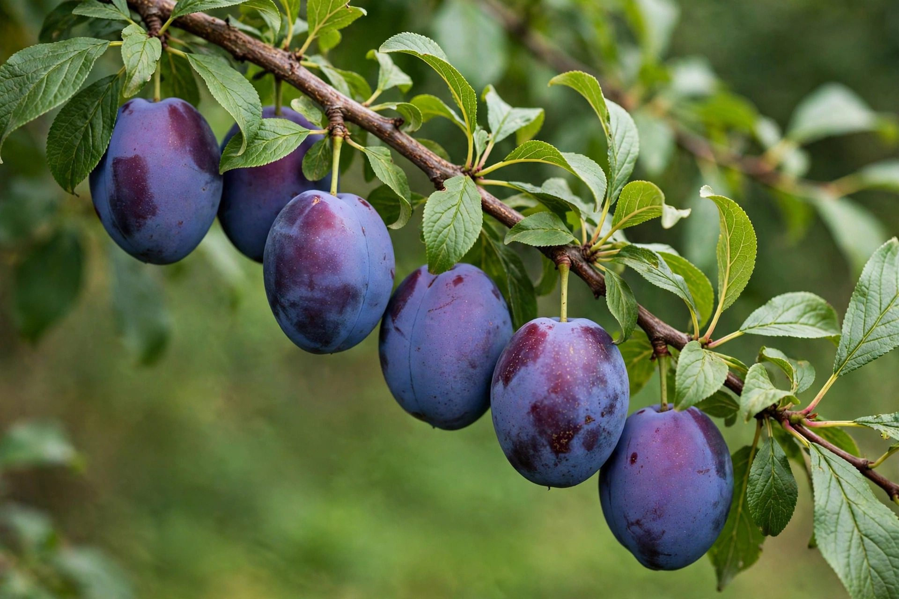

Prunus domestica, the European plum, is a flowering plant in the family Rosaceae. Its fruit is a drupe eaten fresh, dried as a prune, or used in jams, liqueurs such as slivovitz, and desserts.
A small deciduous tree or large shrub with white spring blossom and oval fruit whose skin ranges from green and yellow to red, purple, and near-black, with a distinctive groove and a smooth stone.
Subspecies include the damson, greengage, and mirabelle. Well-known cultivars include 'Victoria' and 'Stanley'. Like Prunus avium, it has been cultivated since antiquity around the Mediterranean and in Europe.
Prunes are dried plums noted for dietary fibre and sorbitol. Plum wood and ornamental forms are also valued.